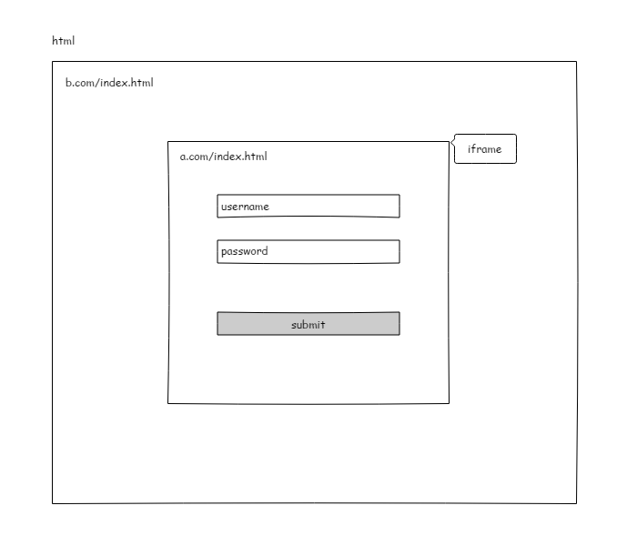
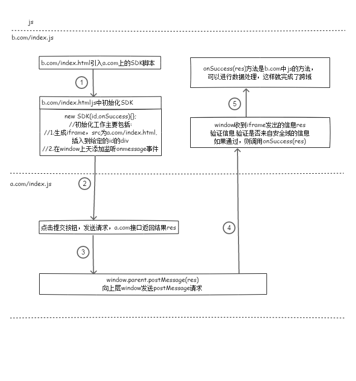

postMessage 理解和应用
写在前面：学习前端的时候，跨域是一定要学习的。关于跨域的方法有很多种，比如document.domain+iframe，window.name + iframe，jsonp…等等。然鹅在学习的时候苦于没有应用场景，往往当时明白了，没多久又忘了。这次是在项目中真实运用到，所以总结下postMesage 跨域的用法。
业务场景
需要提供给其他业务方一个SDK，这个SDK的功能是：初始化一个登录的表单到指定的位置(div)，然后在这个表单提交后获取到我方服务器返回信息。
场景分析：第三方在页面中初始化SDK,这个SDK生成一个iframe，iframe中有个表单，提交表单，根据同源策略，提交表单发出的请求是向我方服务器发送的，返回的结果也只能在iframe中，如何把iframe中的消息也就是我方服务器返回的结果传给第三方在页面？这就是跨域，于是postMesage 就派上了用场。
postMessage定义
postMessage是HTML5 中提供的API,功能是可以安全地实现跨源通信。
实现
如果想要从a.com域下index.html发送请求给b.com域下index.html，大致如下实现
a.com/index.html
1 |
|
在a.com/index.html中嵌入一个iframe，获取到这个iframe，用iframe.contentWindow.postMessage发送一个信息
b.com/index.html
1 | <script> |
在b.com/index.html中监听window对象，如果有接收到postMessage，就进行处理。
应用
看了上面的例子大概就知道怎么动手了。我的需求几乎和例子一样。大致过程如下图：


扩展
window.postMessage() 方法被调用时，会在所有页面脚本执行完毕之后（e.g., 在该方法之后设置的事件、之前设置的timeout 事件,etc.）向目标窗口派发一个
MessageEvent消息。 该MessageEvent消息有几个属性：**MessageEvent.data(只读)
是来自发送者的数据
MessageEvent.origin
返回一个表示消息发送者来源的
MessageEvent.source
属性记录调用 window.postMessage() 方法的窗口信息
需要注意： 在使用window.postMessage时，第四步当收到消息之后，一定要验证消息的来源，确保是可信任的的网站发来的消息才可以处理，如果实现拟定一个白名单，这个白名单上的域才能进行处理，否则会出现安全问题。
window.postMessage(message, targetOrigin, [transfer]) 方法有3个参数，第一个参数就是需要发送的数据，第二个参数通过窗口的origin属性来指定哪些窗口能接收到消息事件，其值可以是字符串*（表示无限制）或者一个URI。由于我们是提供给第三方的SDK，所以不确定信息发送给谁，所以用*，如果你明确的知道消息应该发送到哪个窗口，那么请始终提供一个有确切值的targetOrigin，而不是*。不提供确切的目标将导致数据泄露到任何对数据感兴趣的恶意站点。
补充
一个SDK如何能再不同的环境使用呢？因为既然要校验白名单才能对消息进行处理，不能每次不同的环境更改白名单。这时候可是使用一个小技巧，就是在js中自定义某个字符串，这个字符串储存白名单，当不同环境获取SDK的时候，我们服务端将这个特定的字符串进行改写。这样就生成了不同环境的SDK了。
- 所有环境的SDK代码都是一样的
在SDK文件中使用$((whiteList))(任意自己定义的格式)这样的自定义语法
1
var whiteDomain = '$((whiteList))';
获取SDK文件时SDK服务端做将$((whiteList))字符串替换
- 获取到有不同环境的白名单的SDK
- 当SDK收到postMassge发来的请求，获取到postMassge的origin，用origin和whiteDomain进行对比，如果匹配就进行处理，否则不处理
综上这个方法需要前端和服务端配合完成。